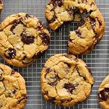

Chocolate Chip Cookies

Description
Chocolate chip cookies are a classic favourite, loved for their soft, chewy texture and rich
bursts of chocolate in every bite. With a perfectly balanced mix of butter, sugar, and chocolate
chips, these cookies are easy to make and even easier to enjoy. Whether served warm with a glass
of milk or saved as a snack for later, this recipe delivers perfect chocolate chip cookies every time.
Ingredients
- 150g unsalted butter, softened
- 150g granulated sugar
- 150g brown sugar
- 2 large eggs
- 1 tsp vanilla extract
- 300g all-purpose flour
- 1 tsp baking soda
- 1/2 tsp salt
- 200g chocolate chips
Steps
- Preheat the Oven: Preheat your oven to 180°C (160°C fan) or 350°F. Line a
baking sheet with parchment paper.
- Mix the Butter and Sugars: In a large mixing bowl, cream together the softened
butter, granulated sugar, and brown sugar until smooth and fluffy.
- Add the Eggs and Vanilla: Beat in the eggs, one at a time, followed by the vanilla extract,
mixing until fully incorporated.
- Combine with Dry Ingredients: In a separate bowl, sift together the flour, baking
soda, and salt. Gradually add this dry mixture to the wet ingredients, stirring until just combined.
- Fold in Chocolate Chips: Gently fold in the chocolate chips until evenly distributed.
- Portion and Bake: Scoop spoonfuls of dough onto the lined baking sheet, leaving space
between each cookie. Bake for 10-12 minutes or until the edges are golden.
- Cool and Serve: Allow the cookies to cool on the baking sheet for a few minutes
before transferring to a wire rack to cool completely.